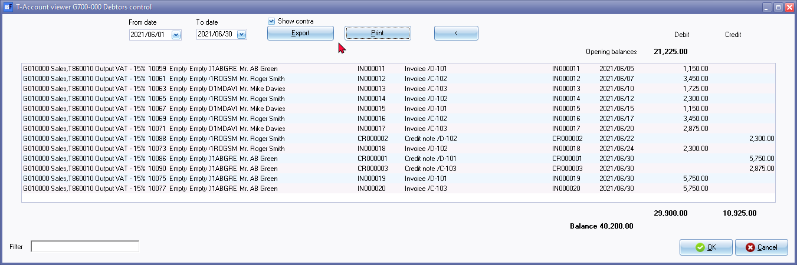
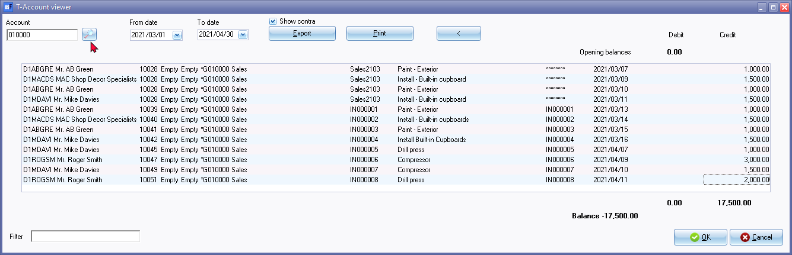
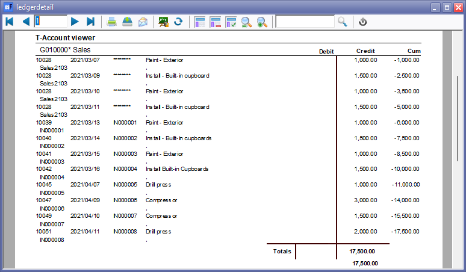
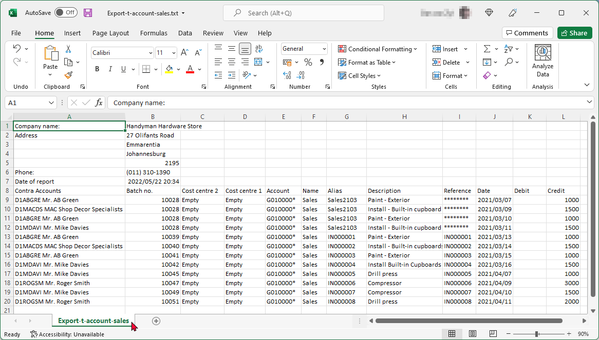

T-Account viewer
The "T-Account viewer" may be launched (for specific accounts or periods) from the Ledger analyser 1 or Ledger analyser 2 options on the Reports ribbon (right-click or double-click on specific accounts or groups).
|
|
Column balances - The column balances report types will list the transactions of a selected account for each period of Last year and This year in a spreadsheet format. You may select an account and double-click on any period. This will launch the T-Account viewer with a list of all the transactions for the selected period. You may be print and/or export the transactions. The following six (6) column balances report types is available:
|

Account viewer - Ledger analyser
In addition to launching the T-Account viewer from the Ledger analyser options, the T-Account viewer may also be launched separately on the Reports ribbon; or from the following options on the Default ribbon:
- Search - Investigator - Account or Batch type searched items.
- Debtors - Transactions tab - Click on the Show transactions button.
- Creditors - Transactions tab - Click on the Show transactions button.
By utilising the T-Account viewer and the reports in the Ledger analyser, you can gain a detailed understanding of the transactions and their impact on the accounts involved.
You may select an account and double-click on a specific period to list and view the transaction details in the T-Account viewer. You may be print and/or export the transactions.
In this example, the T-Account viewer is launched by a double-click in the month (accounting period) "June" in the "G700000 Debtors control" account:

|
|
Show contra - By default this option is not selected. If the Show contra is selected, it will insert (add) the Account code and Description before the batch id (batch number). The Contra accounts will not print on the T-Account viewer ("ledgerdetail") report; but will be included in the Export file when you click on the Export button of the T-Account viewer. |

Print transactions in T-Account viewer
Click on the Print button to print the selection in the T-Account viewer.

|
|
Each time you access the T-Account viewer from the Ledger analyser, it will create a shortcut button (numerical). You may then click on any of the 1, 2, 3, 4, 5 buttons, etc. to view your previous T-Account viewer selections. If the Pivot option was selected, it will launch the Pivot feature. These shortcuts will only be cleared if you:
|

Account viewer - Reports ribbon
To access the T-Account viewer:
- On the Reports ribbon, select T-Account viewer. The "T-Account viewer" screen is displayed:

|
|
Show contra - By default this option is not selected. If the "Show contra" is selected, it will insert (add) the Account code and Description before the batch id (batch number). The Contra accounts will not print on the T-Account viewer ("ledgerdetail") report; but will be included in the Export file when you click on the Export button of the T-Account viewer. |
- Select the following options:
- Account - Select the Account on the Lookup, if this field is available.
|
|
The Account option will only be available, if the T-Account viewer is launched from the T-Account viewer on the Reports ribbon). The Account lookup option is not available, if the T-Account viewer is launched from elsewhere. |
- From date and To date - Enter or select the dates on the date picker.
|
|
The "From date" and "To date" fields will automatically be filled in with the date selected on the Ledger analyser report options. It will only include transactions for these dates. You may enter or select any other dates, if necessary. |
|
|
If you have selected the Column balances report types, and you click on the period columns, the dates for the selected period column will automatically be selected. |
|
|
If the Pivot option was selected, it will launch the Pivot feature. |
- You may also use the following options to get specific views of transactions:
- Batch number (e.g. 10014 automatically generated). This will list only the transactions for a specific batch (journal).
- Account code (e.g. B810000 Current Bank account, G610010 Furniture and Fittings @ Cost, G210010 Fuel & Oil, G720000 Petty cash, G220000 Rent, G225000 Salaries and Wages, T850020 Input Tax Standard Rate, T850030 Input Tax Capital Goods). This will list the transactions for a specific account.
- Date – This will list the transactions for a specific date. If you double-click on a date, the From date and To date will be changed to the selected date.
- Once finished, click on the Close button to exit (close) the "T-Account viewer" screen.
|
|
The T-Account viewer may also be accessed from the Search (Default ribbon). - Once an account is listed, and selected, double-click on it. |
|
|
If the T-Account viewer is accessed from the Reports ribbon, you may select an account on the Accounts lookup. |

Export T-Account viewer
To create a T-Account viewer - Export file:
- On the Reports ribbon, select Ledger analyser 1 or Ledger analyser 2.
- Select the "Column balances" report type. Once finished, selecting your options, click on the Report button to build, update or refresh the data for the selected report type on the Ledger analyser screen.
- Click on the Export button. This will launch the "Save as" screen.

- Select the folder in which you wish to save the file.
- The default file name will be "Export.txt". Overtype this with your own name.
|
|
If you do not enter and save the Export.txt file name, you may replace existing (previously exported) files. Of an existing exported file is opened, and you are trying to save a export file with the same name, a similar error message as the following will be displayed: Cannot create file "D:\exports\Export.txt". The process cannot access the file because it is being used by another process. |

- Click on the Save button.
- This will automatically open (launch) the file in your system's default spreadsheet application or program associated with comma separates value file type.
